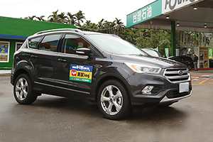
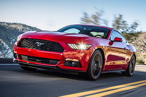

儘管2015年6月時、筆者就已經在國內試駕過搭載2.3升4缸EcoBoost渦輪增壓引擎 (實際排氣量2,261c.c.)、底盤明顯朝歐洲車調性設定的Mustang 2.3L EcoBoost，並對它留下了相當不錯的印象；不過、這款少了大排量V8引擎聲浪的入門「野馬」，即便擁有價格與稅賦上的優勢，引擎也擁有深厚的改裝潛力，但其就是少了那麼一點點狂野，也所以才會有今天這輛Mustang 5.0L GT的存在。
肌肉曲線依舊，細節做出差異
事實上、由於Mustang 2.3L EcoBoost的外觀在導入新世代家族設計語彙之餘，已相當完整地傳承了歷代Mustang的經典設計，所以就算是定位較高階的Mustang 5.0L GT車型，外觀造型也與Mustang 2.3L EcoBoost幾乎完全相同，依舊保有雙門、前置引擎/後輪驅動的佈局，加上鯊魚嘴、大型蜂巢水箱護罩、Fastback斜背式線條、無窗框車門、三道格柵式尾燈組，以及長車頭/短車尾的經典設計，並導入HID氙氣頭燈組，且引擎蓋上也有兩道刻意隆起的稜線，並採用運動型左/右雙出式排氣尾管設計。
不過，為了做出產品區隔，有別於Mustang 2.3L EcoBoost搭載的是EcoBoost Performance Package套件，總代理福特六和為Mustang 5.0L GT所配置的係GT版性能套件，所以水箱護罩的蜂巢設計並不一樣，19吋輪圈也是GT車款專屬的造型，車尾則是換裝經典「GT」圓形銘牌，並於左/右兩側葉子鈑嵌上「5.0」銘牌，豪邁地秀出自豪的身份。

座艙內，Mustang 5.0L GT則是沿用了Mustang 2.3L EcoBoost的雙環儀表板、三輻式多功能方向盤和飛翼式中控臺的配置，中控臺上也鑲有一隻8吋彩色觸控螢幕，亦同樣配備有Ford SYNC娛樂通訊整合系統，可連結駕駛人的智慧型手機，並可用語音來操作音樂撥放、車內空調設定、來電接聽與撥話等；儀表板中的彩色液晶螢幕則是一樣可見Track Apps賽道程式，能隨時監控、記錄著加速計時、G力值、煞車表現等數據，賽道使用相當貼心。
而且在Mustang 5.0L GT上，為了控制野性，不僅配備的是兩張手動調整的Recaro可調式賽車座椅，Track Apps賽道程式還增加了僅限於專業賽道場地 (如直線加速競賽) 使用的Line Lock (線鎖) 暖胎前輪鎖功能，能在開啟時，讓前輪煞車獨立於後輪煞車作動，在保護煞車的前提下鎖死前輪、讓車輛保持靜止，使後輪能夠空轉，讓輪胎因溫度迅速升高而進入最佳工作狀態，發揮最大的起跑抓地力。
5.0 V8引擎登場，底盤設定再進化
最大的傳動組合搭配差異部分，Mustang 5.0L GT搭載的為5.0升V8自然進氣汽油引擎 (實際排氣量4,951c.c.)，可在引擎轉速4,250至6,500轉之間、提供421匹最大馬力，並於引擎轉速4,250轉時、供應54公斤米的最大扭力，與入門Mustang 2.3L EcoBoost車型相比，馬力與扭力數據簡直就像大力水手吃了菠菜後一般、分別大幅提升了104匹與10公斤米，所以由靜止加速到時速100公里僅需4.8秒，極速則可達249公里，較Mustang 2.3L EcoBoost的5.8秒和233公里有著不小的進步。
變速箱及底盤方面，Mustang 5.0L GT則是與Mustang 2.3L EcoBoost同樣搭載 6速SelectShift手自排變速箱，且EPAS電子式動力輔助轉向系統一樣提供有標準、舒適與運動共三種模式可選，駕駛模式亦有標準、運動+、賽道與雪地/濕滑模式共四種設定可搭，並和Mustang 2.3L EcoBoost同採前麥佛遜、後多連桿的懸吊配置。
不過，Mustang 5.0L GT的前輪剎車，已由Mustang 2.3L EcoBoost的352X32mm前通風碟加4活塞卡鉗、升級為Brembo的380X34mm通風碟與6活塞卡鉗，且升級進氣冷卻系統、強化底盤拉桿，並將底盤和電子輔助系統調校得更為賽車設定，輪胎還換成前：255/40R19、後275/40R19 (Mustang 2.3L EcoBoost則為4輪255/40R19的搭配) 的Pirelli P-Zero，好整以暇地對應其狂野的動力。
粗曠、豪邁、不羈，真野馬本色回歸
儘管天公不做美、實際驅車上路，依然很快就能分辨出Mustang 5.0L GT與Mustang 2.3L EcoBoost兩者的差異，因為只要一發動，即便在怠速狀態下、Mustang 5.0L GT的排氣管也會很有規律地輕輕發出飽滿之「啵啵啵啵﹍」連續節奏，就像Harley-Davidson的三節拍一樣迷人；而且輕踩油門便能獲得遠較Mustang 2.3L EcoBoost更為充實的加速力道，扭力輸出極為渾厚，完全就是正統美國肌肉車的那種豪邁味道。
此外，這具5.0升V8自然進氣引擎的運轉精緻度，或許不如Mustang 2.3L EcoBoost的2.3升渦輪引擎，但是大腳油門、奮力前衝後的那種暢快感，卻是目前小排量引擎的罩門，所以在Mustang 5.0L GT上，你不僅可以聽著音樂、從容地洲際巡航，也能夠隨心所欲地燒胎衝刺起跑，快慢之間、享受兩種不同的樂趣。
不過，也因為換上了一具5.0升V8自然進氣引擎、所以Mustang 5.0L GT的車重 (1,730公斤) 較Mustang 2.3L EcoBoost (1,650公斤) 多了足足80公斤，車身前/後配重也較為遜色，因此操控表現上較為神經質，不如Mustang 2.3L EcoBoost來得「歐」化，所以在試駕當日那種濕滑的路面上，油門稍一踩重、車尾立刻蠢蠢欲動，得更專注於拿捏掌握才能盡興，就像想馴服已長久自由奔馳在大草原上的野馬一樣，需要多用點技巧與心力與它溝通，雖然有點不文明、似乎也已背離了當前汽車設計的論調，但是﹍這不就是野馬的傳奇之所以能夠延續超過半個世紀的迷人之處嗎？而且這也才是我真正想要的Mustang。
[影音試駕] Ford Mustang 5.0L GT 馬兒野有真性情


-

[國道5號油耗紀實]Ford Kuga EcoBoost 180時尚經典型實測
Ford Kuga於2016年底推出小改款，U-CAR也購入了EcoBoost 180時尚經典型之車型作為公務車，對照2014年測試的1.6升引擎的車款，雖然排氣量降為1.5升但馬力更大，車重也更輕，那麼新Kuga的油耗表現如何...
-

年輕爸媽購車首選－Ford Focus 1.6L四門汽油時尚型
Ford Focus 1.6L 四門汽油時尚型，就是專為年輕爸媽打造的最佳親子座駕，66.9萬元的低入手門檻、國產中型房車唯一歐系底盤的Focus，不僅擁有高度駕駛樂趣，滿滿的主動與被動安全系統，更是Focus之所以能凌駕於...
-

跟著野馬奔向自由－2017 Ford Mustang美式肌肉跑車
自1964年誕生，至今已演化6個世代車型、車系歷史超過50年的Mustang，是俗稱Pony car的美式雙門肌肉跑車中，最受歡迎、也最具歷史意義的一款。這樣的背景，讓Mustang不單單只是一輛跑車那樣膚淺，還擁有深厚的底蘊...
c2017 MediaBrilliance System Corporation. All Rights Reserved.